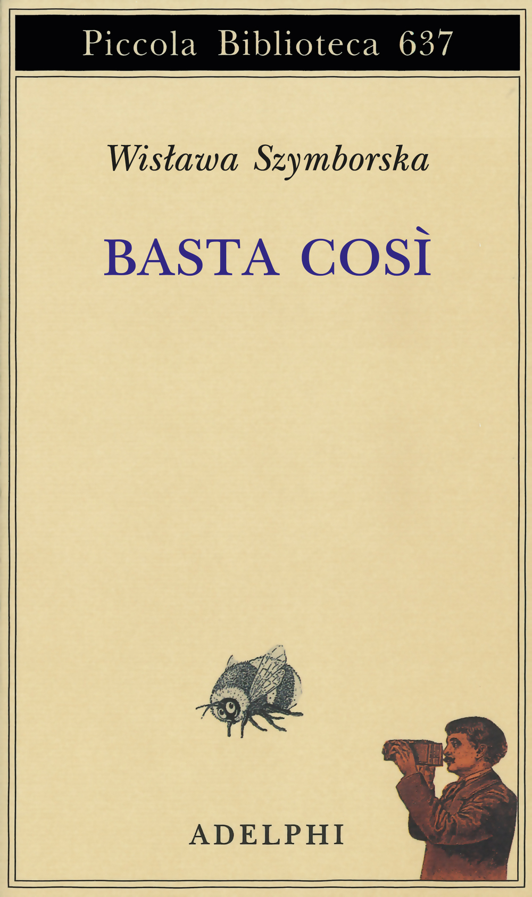
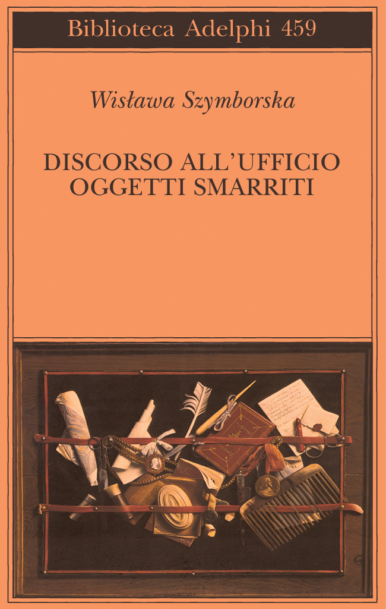
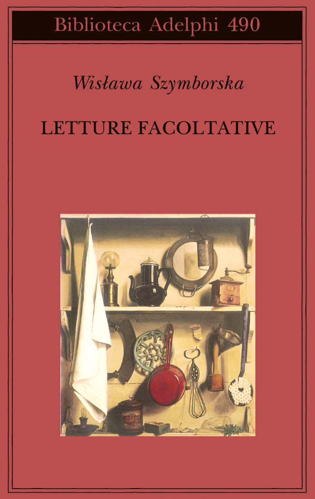

48:36 · 22 OPERE
Wisława Szymborska: la poesia al centro del mondo.
Il filo del discorso
La lettura di Wisława Szymborska diventa una riflessione sul legame fra poesia e pensiero. Dr Divago presenta Basta così e Discorso all’Ufficio oggetti smarriti, accennando anche alle prose di Letture facoltative. Dalla memoria editoriale di Krynicki passa alla critica dell’industria culturale, poi segue le poesie attraverso dubbio, necessità di nutrirsi, ambivalenza umana, guerra e responsabilità. Una mano capace di scrivere opere opposte e uno specchio rimasto intatto fra le rovine mostrano, nella sua lettura, lo scarto fra funzionamento degli oggetti e coscienza. Vietnam concentra la violenza della guerra nel dialogo con una donna, mentre Intervista a un bambino e La veglia riaprono lo stupore davanti a ciò che appare ovvio. Il relatore dissente dalla propria interpretazione del finale di Il resto; la nota distingue la formula latina dal significato che egli le attribuisce. Possibilità ed Eccesso chiudono il percorso sul valore dell’attenzione e sui limiti della novità. Il commento filosofico e le applicazioni alla politica contemporanea restano letture del relatore.
I libri nel discorso

Basta così
Copertina: Adelphi2012, Piccola Biblioteca637, traduzione Silvano De Fanti, cura Ryszard Krynicki. Originale Wystarczy, Wydawnictwo a5,2012. Il catalogo corrente riporta una ristampa successiva, non prova della tiratura letta.
Immagine autentica dell’opera, controllata visivamente; l’edizione di riferimento non è attribuita al filmato.
Raccolta postuma nominata e letta; traduzione italiana Silvano De Fanti, cura Ryszard Krynicki.
Passaggio 6:30 ↗ · Fonti e libro ↗
Discorso all’Ufficio oggetti smarriti. Poesie1945–2004
Copertina: Adelphi2004, Biblioteca459, cura e traduzione Pietro Marchesani,189 pagine nel catalogo. Antologia italiana distinta da Poems New and Collected1957–1997, Harcourt1998, evocata nel discorso.
Immagine autentica dell’opera, controllata visivamente; l’edizione di riferimento non è attribuita al filmato.
Antologia nominata in apertura e ripresa a1869s; Adelphi2004, cura Pietro Marchesani.
Passaggio 6:42 ↗ · Fonti e libro ↗
Letture facoltative
Copertina: Adelphi2006, Biblioteca490, traduzione Valentina Parisi, cura Luca Bernardini. Prose e recensioni, non una raccolta poetica; volume nominato ma non letto nel contributo.
Immagine autentica dell’opera, controllata visivamente; l’edizione di riferimento non è attribuita al filmato.
Raccolta di prose nominata e consigliata; il relatore precisa che non la tratterà.
Passaggio 7:19 ↗ · Fonti e libro ↗C’è chi
Copertina della raccolta che contiene la poesia: Copertina della raccolta Basta così. Adelphi2012, Piccola Biblioteca637, traduzione Silvano De Fanti, cura Ryszard Krynicki. Originale Wystarczy, Wydawnictwo a5,2012. Il catalogo corrente riporta una ristampa successiva, non prova della tiratura letta. Immagine del contenitore dichiarata; la poesia non ha una copertina autonoma.
Immagine della raccolta citata, non una edizione autonoma della singola poesia. Tiratura specifica non identificata dal solo parlato.
Titolo e lettura della poesia riconoscibili; copertina del volume contenitore dichiarata, nessun libro autonomo inventato.
Passaggio 18:31 ↗ · Fonti e libro ↗Coercizione
Copertina della raccolta che contiene la poesia: Copertina della raccolta Basta così. Adelphi2012, Piccola Biblioteca637, traduzione Silvano De Fanti, cura Ryszard Krynicki. Originale Wystarczy, Wydawnictwo a5,2012. Il catalogo corrente riporta una ristampa successiva, non prova della tiratura letta. Immagine del contenitore dichiarata; la poesia non ha una copertina autonoma.
Immagine della raccolta citata, non una edizione autonoma della singola poesia. Tiratura specifica non identificata dal solo parlato.
Titolo e lettura della poesia riconoscibili; copertina del volume contenitore dichiarata, nessun libro autonomo inventato.
Passaggio 21:07 ↗ · Fonti e libro ↗La mano
Copertina della raccolta che contiene la poesia: Copertina della raccolta Basta così. Adelphi2012, Piccola Biblioteca637, traduzione Silvano De Fanti, cura Ryszard Krynicki. Originale Wystarczy, Wydawnictwo a5,2012. Il catalogo corrente riporta una ristampa successiva, non prova della tiratura letta. Immagine del contenitore dichiarata; la poesia non ha una copertina autonoma.
Immagine della raccolta citata, non una edizione autonoma della singola poesia. Tiratura specifica non identificata dal solo parlato.
Titolo e lettura della poesia riconoscibili; copertina del volume contenitore dichiarata, nessun libro autonomo inventato.
Passaggio 25:37 ↗ · Fonti e libro ↗Lo specchio
Copertina della raccolta che contiene la poesia: Copertina della raccolta Basta così. Adelphi2012, Piccola Biblioteca637, traduzione Silvano De Fanti, cura Ryszard Krynicki. Originale Wystarczy, Wydawnictwo a5,2012. Il catalogo corrente riporta una ristampa successiva, non prova della tiratura letta. Immagine del contenitore dichiarata; la poesia non ha una copertina autonoma.
Immagine della raccolta citata, non una edizione autonoma della singola poesia. Tiratura specifica non identificata dal solo parlato.
Titolo e lettura della poesia riconoscibili; copertina del volume contenitore dichiarata, nessun libro autonomo inventato.
Passaggio 28:04 ↗ · Fonti e libro ↗Reciprocità
Copertina della raccolta che contiene la poesia: Copertina della raccolta Basta così. Adelphi2012, Piccola Biblioteca637, traduzione Silvano De Fanti, cura Ryszard Krynicki. Originale Wystarczy, Wydawnictwo a5,2012. Il catalogo corrente riporta una ristampa successiva, non prova della tiratura letta. Immagine del contenitore dichiarata; la poesia non ha una copertina autonoma.
Immagine della raccolta citata, non una edizione autonoma della singola poesia. Tiratura specifica non identificata dal solo parlato.
Titolo e lettura della poesia riconoscibili; copertina del volume contenitore dichiarata, nessun libro autonomo inventato.
Passaggio 29:33 ↗ · Fonti e libro ↗Il resto
Copertina della raccolta che contiene la poesia: Copertina della raccolta Discorso all’Ufficio oggetti smarriti. Poesie1945–2004. Adelphi2004, Biblioteca459, cura e traduzione Pietro Marchesani,189 pagine nel catalogo. Antologia italiana distinta da Poems New and Collected1957–1997, Harcourt1998, evocata nel discorso. Immagine del contenitore dichiarata; la poesia non ha una copertina autonoma.
Immagine della raccolta citata, non una edizione autonoma della singola poesia. Tiratura specifica non identificata dal solo parlato.
Titolo e lettura della poesia riconoscibili; copertina del volume contenitore dichiarata, nessun libro autonomo inventato.
Passaggio 31:49 ↗ · Fonti e libro ↗Vietnam
Copertina della raccolta che contiene la poesia: Copertina della raccolta Discorso all’Ufficio oggetti smarriti. Poesie1945–2004. Adelphi2004, Biblioteca459, cura e traduzione Pietro Marchesani,189 pagine nel catalogo. Antologia italiana distinta da Poems New and Collected1957–1997, Harcourt1998, evocata nel discorso. Immagine del contenitore dichiarata; la poesia non ha una copertina autonoma.
Immagine della raccolta citata, non una edizione autonoma della singola poesia. Tiratura specifica non identificata dal solo parlato.
Titolo e lettura della poesia riconoscibili; copertina del volume contenitore dichiarata, nessun libro autonomo inventato.
Passaggio 33:47 ↗ · Fonti e libro ↗Scritto in un albergo
Copertina della raccolta che contiene la poesia: Copertina della raccolta Discorso all’Ufficio oggetti smarriti. Poesie1945–2004. Adelphi2004, Biblioteca459, cura e traduzione Pietro Marchesani,189 pagine nel catalogo. Antologia italiana distinta da Poems New and Collected1957–1997, Harcourt1998, evocata nel discorso. Immagine del contenitore dichiarata; la poesia non ha una copertina autonoma.
Immagine della raccolta citata, non una edizione autonoma della singola poesia. Tiratura specifica non identificata dal solo parlato.
Titolo e lettura della poesia riconoscibili; copertina del volume contenitore dichiarata, nessun libro autonomo inventato.
Passaggio 37:30 ↗ · Fonti e libro ↗Intervista a un bambino
Copertina della raccolta che contiene la poesia: Copertina della raccolta Discorso all’Ufficio oggetti smarriti. Poesie1945–2004. Adelphi2004, Biblioteca459, cura e traduzione Pietro Marchesani,189 pagine nel catalogo. Antologia italiana distinta da Poems New and Collected1957–1997, Harcourt1998, evocata nel discorso. Immagine del contenitore dichiarata; la poesia non ha una copertina autonoma.
Immagine della raccolta citata, non una edizione autonoma della singola poesia. Tiratura specifica non identificata dal solo parlato.
Titolo e lettura della poesia riconoscibili; copertina del volume contenitore dichiarata, nessun libro autonomo inventato.
Passaggio 41:12 ↗ · Fonti e libro ↗La veglia
Copertina della raccolta che contiene la poesia: Copertina della raccolta Discorso all’Ufficio oggetti smarriti. Poesie1945–2004. Adelphi2004, Biblioteca459, cura e traduzione Pietro Marchesani,189 pagine nel catalogo. Antologia italiana distinta da Poems New and Collected1957–1997, Harcourt1998, evocata nel discorso. Immagine del contenitore dichiarata; la poesia non ha una copertina autonoma.
Immagine della raccolta citata, non una edizione autonoma della singola poesia. Tiratura specifica non identificata dal solo parlato.
Titolo e lettura della poesia riconoscibili; copertina del volume contenitore dichiarata, nessun libro autonomo inventato.
Passaggio 43:56 ↗ · Fonti e libro ↗Possibilità
Copertina della raccolta che contiene la poesia: Copertina della raccolta Discorso all’Ufficio oggetti smarriti. Poesie1945–2004. Adelphi2004, Biblioteca459, cura e traduzione Pietro Marchesani,189 pagine nel catalogo. Antologia italiana distinta da Poems New and Collected1957–1997, Harcourt1998, evocata nel discorso. Immagine del contenitore dichiarata; la poesia non ha una copertina autonoma.
Immagine della raccolta citata, non una edizione autonoma della singola poesia. Tiratura specifica non identificata dal solo parlato.
Titolo e lettura della poesia riconoscibili; copertina del volume contenitore dichiarata, nessun libro autonomo inventato.
Passaggio 44:21 ↗ · Fonti e libro ↗Eccesso
Copertina della raccolta che contiene la poesia: Copertina della raccolta Discorso all’Ufficio oggetti smarriti. Poesie1945–2004. Adelphi2004, Biblioteca459, cura e traduzione Pietro Marchesani,189 pagine nel catalogo. Antologia italiana distinta da Poems New and Collected1957–1997, Harcourt1998, evocata nel discorso. Immagine del contenitore dichiarata; la poesia non ha una copertina autonoma.
Immagine della raccolta citata, non una edizione autonoma della singola poesia. Tiratura specifica non identificata dal solo parlato.
Titolo e lettura della poesia riconoscibili; copertina del volume contenitore dichiarata, nessun libro autonomo inventato.
Passaggio 47:11 ↗ · Fonti e libro ↗
Il pendolo di Foucault
Copertina: La nave di Teseo · Oceani 50, 2018
Copertina autentica La nave di Teseo, edizione 2018. Il romanzo originale è del 1988; il riferimento bibliografico dell’immagine è successivo alla registrazione del 14 ottobre 2018 e non identifica il volume del video.
Eco e Il pendolo di Foucault espliciti nel ragionamento sugli autori a proprie spese.
Passaggio 13:24 ↗ · Fonti e libro ↗
Divina Commedia
Identificazione probabile
Copertina: Giunti Barbera · Passepartout, 2021 · edizione di riferimento
Conte Ugolino richiamato, probabile riferimento a InfernoXXXIII senza titolo del poema pronunciato.
Passaggio 22:29 ↗ · Fonti e libro ↗
Antigone
Identificazione probabile
Copertina: Einaudi · Collezione di teatro · edizione di riferimento
Immagine associata all’ISBN di riferimento e controllata visivamente; edizione e traduzione non identificate come quelle citate o lette nel video.
Sofocle e il coro sulla ambivalenza umana riconoscibili, titolo non pronunciato.
Passaggio 26:12 ↗ · Fonti e libro ↗
Mein Kampf
Copertina: Hitler, Mein Kampf. Eine kritische Edition, Institut für Zeitgeschichte, 2016, due volumi, a cura di Christian Hartmann, Thomas Vordermayer, Othmar Plöckinger e Roman Töppel; ISBN 9783981405231.
Immagine autentica della copertina grigia dell’edizione critica dell’Institut für Zeitgeschichte. Si tratta di un’opera in due volumi: l’immagine piana di copertina non è dichiarata fotografia completa dei due volumi né edizione originale nazista. La ristampa precisa illustrata non è attribuita dal solo ISBN.
Titolo esplicito dentro la poesia La mano, come polo negativo di un confronto letterario; non una lettura del libro.
Passaggio 25:48 ↗ · Fonti e libro ↗
Winnie-the-Pooh
Copertina: Fotografia del piatto anteriore dell’esemplare della prima edizione 1926 conservato nella Stuart and Mimi Rose Collection, Folger Shakespeare Library; illustrazioni di Ernest H. Shepard.
Fotografia autentica della legatura verde con cornice e figure dorate di Christopher Robin e Pooh. È il piatto anteriore del libro conservato dalla Folger, non la sovraccoperta illustrata, benché la scheda descriva anche la presenza della sovraccoperta nell’esemplare. Il titolo non è visibile sul piatto: l’identificazione deriva dalla scheda della biblioteca. Non è certificato come il volume mostrato nel video.
Titolo esplicito dentro La mano, come polo del confronto; non analisi del libro.
Passaggio 25:56 ↗ · Fonti e libro ↗
Amleto
Copertina: BUR · 2022 · traduzione di Rocco Coronato · illustrazioni di John Austen
Immagine autentica dell’opera, controllata visivamente; non identifica l’edizione usata nel video.
Ofelia e Amleto espliciti nel commento a Il resto, non una lettura della tragedia.
Passaggio 32:08 ↗ · Fonti e libro ↗
Bartleby lo scrivano
Copertina della raccolta: Bompiani · Bartleby lo scrivano e altri racconti · 2018
Copertina della raccolta Bompiani che contiene Bartleby lo scrivano. Non è presentata come copertina di un’edizione autonoma del racconto né come l’esemplare citato nel video.
Bartleby e la formula del rifiuto espliciti come confronto con Vietnam, non citazione di una edizione.
Passaggio 36:48 ↗ · Fonti e libro ↗Minutaggi ricavati da testi automatici, da riascoltare. Le identificazioni probabili sono segnalate accanto ai libri.